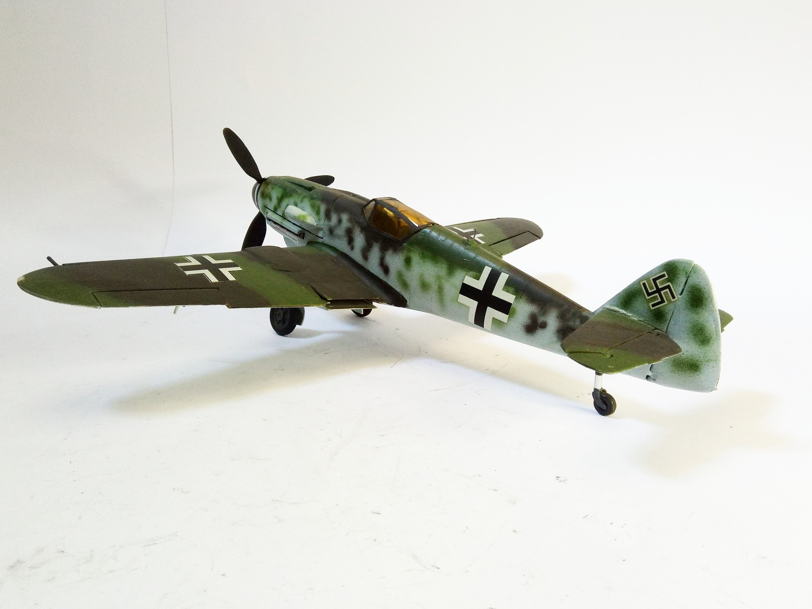
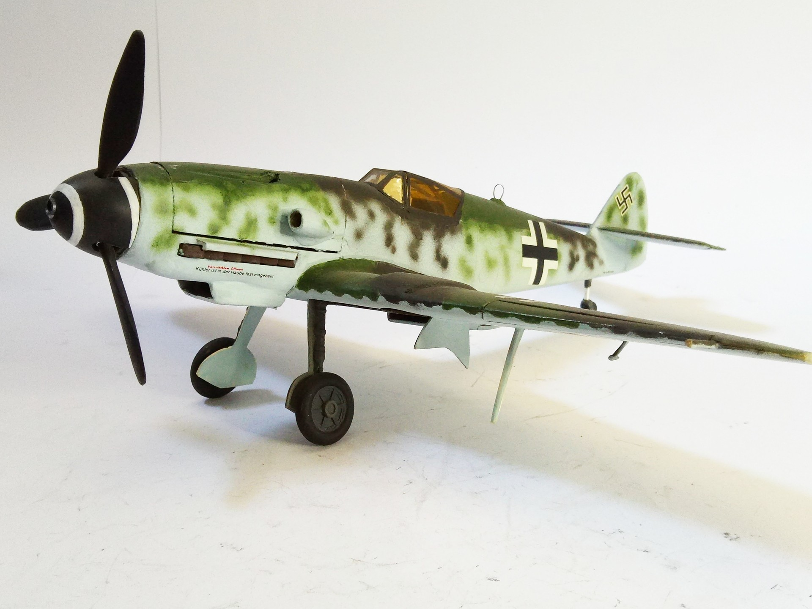

Aerei · scale model archive
Messerschmitt Me109 K4
Messerschmitt Me109 K4 — Kit: conversion from Revell, Scale: 1/32. Conversion from Me109 G to Me109 K (engine cowling, canopy, U/C wheels fairing) #1/32…

Photo gallery

English description
Conversion from Me109 G to Me109 K (engine cowling, canopy, U/C wheels fairing)
#1/32 #conversion
Descrizione italiana
Conversione da Me109 G una Me109 K (motore cowling, tettuccio, U/C wheels fairing).